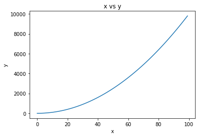
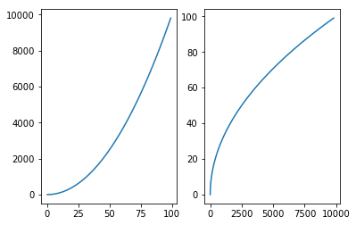
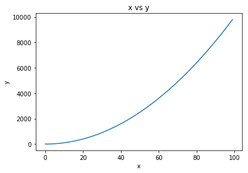
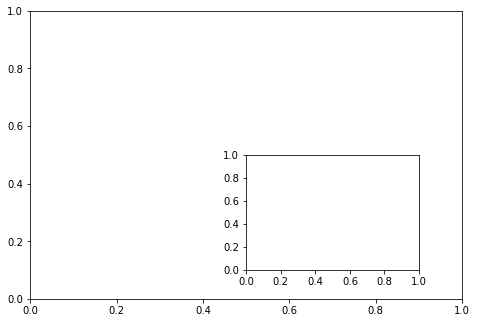
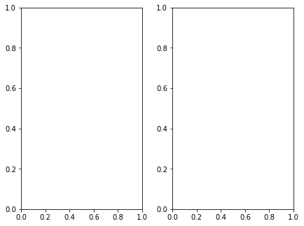
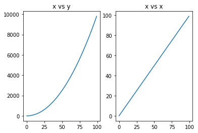
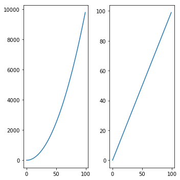
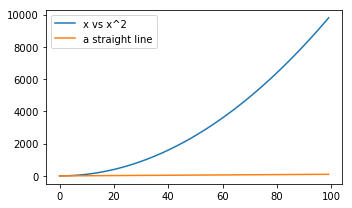
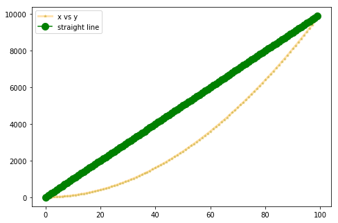
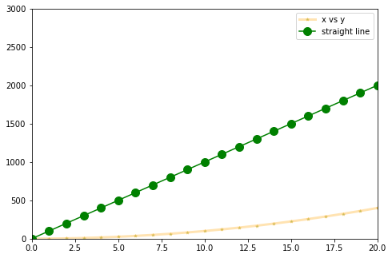

Intro to plotting with matplotlib¶

Matplotlib is a popular open source 2D plotting library for Python, modeled after Matlab. There are two approaches of using this - functional approach & objected-oriented approach. The latter is preferred.
ToC - importing - Functional plotting - subplots - Object oriented plotting - multiplots - Creating side by side plots - Easier subplots - Figsize - Saving your plots - Labels and legends - Decorating with colors markers transparency - Set limits on axes - pie charts
importing¶
1 2 | import matplotlib.pyplot as plt %matplotlib inline |
Let us create some data for X and Y for the plots
1 2 | x = list(range(0,100)) y = list(map(lambda x:x**2, x)) |
Functional plotting¶
Call the plotting as functions.
1 2 3 4 | plt.plot(x,y) plt.xlabel('x') plt.ylabel('y') plt.title('x vs y') |
1 | <matplotlib.text.Text at 0x10e2918d0> |

subplots¶
Use subplot method and specify nrows, ncols, plot number as arguments. Thus specify (1,2,1) for two plots side by side, (2,2,1) for four plots like quadrants.
1 2 3 4 5 | plt.subplot(1,2,1) #one row, 2 cols, 1st plot: plt.plot(x,y) plt.subplot(1,2,2) #the second plot: plt.plot(y,x) |
1 | [<matplotlib.lines.Line2D at 0x1108489b0>] |

Object oriented plotting¶
Here we create a figure object, set axes, then add plots to it.
Specify the axes as a list of a rectangle's [left, bottom, width, height]. The values always range from 0-1.
1 2 3 4 5 6 7 | fig = plt.figure() ax = fig.add_axes([0.1,0.1,0.8,0.8]) #rectangle's [left, bottom, width, height] ax.plot(x,y) ax.set_xlabel('x') ax.set_ylabel('y') ax.set_title('x vs y') |
1 | <matplotlib.text.Text at 0x111098940> |

multiplots¶
You can create multiple plots, subplots, insert plots easily in OO approach once the axes is defined.
1 2 3 4 | fig2 = plt.figure() ax1 = fig2.add_axes([0.1,0.1,0.8,0.8]) ax_ins = fig2.add_axes([0.2,0.5,0.3,0.3]) #insert in upper left side of plot |

Consider the rectangle has max length and width = 1. You can create the first plot as big as you want filling this canvas. Then create the second sort of independent of first, using the same canvas coordinates.
1 2 3 4 | fig3 = plt.figure() ax1 = fig3.add_axes([0,0,1,1]) #absolute - full size fig ax_ins = fig3.add_axes([0.5,0.1,0.4,0.4]) #insert in lower right side of plot |

Creating side-by-side plots¶
1 2 3 4 | fig3 = plt.figure() ax1 = fig3.add_axes([0,0,0.4,1]) # about half in width, full height ax2 = fig3.add_axes([0.5,0,0.4,1]) #same, but to the right |

Easier subplots¶
If you are going to be doing side-by-side subplots, then use the easier API as shown below. Matplotlib will auto arrange the axes and plots for you.
1 2 3 4 5 6 7 | fig, axes = plt.subplots(nrows=1,ncols=2) axes[0].plot(x,y) axes[0].set_title('x vs y') axes[1].plot(x,x) axes[1].set_title('x vs x') |
1 | <matplotlib.text.Text at 0x111997be0> |

Figsize¶
Specify the figure size of the plots. You specify this in inches.
1 2 3 4 5 6 | fig, axes = plt.subplots(nrows=1,ncols=2, figsize=(5,5)) #specifying as **kwargs axes[0].plot(x,y) axes[1].plot(x,x) #use tight layout to resize plots within the canvas so there is no overlaps fig.tight_layout() |

Saving your plots¶
call the savefig() method of figure object
1 | fig.savefig('my_plots.png', dpi=300) |
Labels and legends¶
You can add legend to the axis object. You first populate the label property of the plot for any text to show up in the legend as shown below:
When inserting a legend, you can specify loc=0 for auto positioning. Value loc=1 is upper right, loc=2 is upper left and so on.
1 2 3 4 5 6 7 | fig, axes = plt.subplots(nrows=1,ncols=1, figsize=(5,3)) #just 1 large plot axes.plot(x,y, label='x vs x^2') axes.plot(x,x, label ='a straight line') axes.legend(loc=0) #loc=0 corresponds to best position available. #use tight layout to resize plots within the canvas so there is no overlaps fig.tight_layout() |

Note : fig.suplots() does not always return a vector axis object array. As shown above, if you have just 1 plot, it has only 1 axis object.
Decorating with colors markers transparency¶
You can go town here and do the full customization, however it is adviced to use a higher level plotting API like seaborn if you find yourself writing a lot of styling code. The plot() method accepts a lot of these arguments
1 2 3 4 5 6 7 8 9 10 11 12 13 14 15 16 17 18 19 | #linewidth or lw - ranges from 1 (default) to any high up #colors - takes names and HTML notations #alpha - is for transparency and ranges from [0-1] #marker - for tick marks and specify in characters #markersize #markerfacecolor #markeredgecolor #markeredgewidth fig = plt.figure() ax = fig.add_axes([0,0,1,1]) st_line = list(range(0,10000, 100)) ax.plot(x,y,color='orange', linewidth='3', alpha=0.3, marker='*', markersize=4, markerfacecolor='green', label='x vs y') ax.plot(x,st_line, color='green', marker='o', markersize=10, markerfacecolor='green', label='straight line') ax.legend() |
1 | <matplotlib.legend.Legend at 0x113249b00> |

Set limits on axes¶
In the chart above, if you want to zoom and only show the chart for values from 0-20 on X you can do so by limiting the axes. You can also set it such that the axes extends beyond the range of your data
1 2 3 4 5 6 7 8 9 10 11 12 13 | fig = plt.figure() ax = fig.add_axes([0,0,1,1]) st_line = list(range(0,10000, 100)) ax.plot(x,y,color='orange', linewidth='3', alpha=0.3, marker='*', markersize=4, markerfacecolor='green', label='x vs y') ax.plot(x,st_line, color='green', marker='o', markersize=10, markerfacecolor='green', label='straight line') ax.legend() ax.set_xlim(0,20) ax.set_ylim(0,3000) |
1 | (0, 3000) |

pie charts¶
You need to send values for pie charts as numbers. You cannot pass a text column and expect matplotlib to count values and make a pie out of it.
1 2 3 4 5 6 7 8 9 10 11 12 13 14 15 16 17 | values = [400, 280, 10] labels = ['apple', 'android', 'windows'] # you can just call plt.pie. However it prints a bunch of objs on the notebook. I do this just to suppress that. fix, ax1 = plt.subplots() # you get the returns from ax1.pie because the font is tiny and to make it bigger # the autopct is to get the percentage values. _, texts, autotexts = ax1.pie(values, labels=labels, shadow=True, autopct='%1.1f%%') # make the font bigger by calling set_fontsize method each obj in texts, autotexts list(map(lambda x:x.set_fontsize(15), texts)) list(map(lambda x:x.set_fontsize(15), autotexts)) # by default the pie has a perspective. so you here you make it flat ax1.axis('equal') ax1.set_title('Cell phone OS by popularity', fontsize=15) |
1 | <matplotlib.text.Text at 0x11843d390> |

1 |